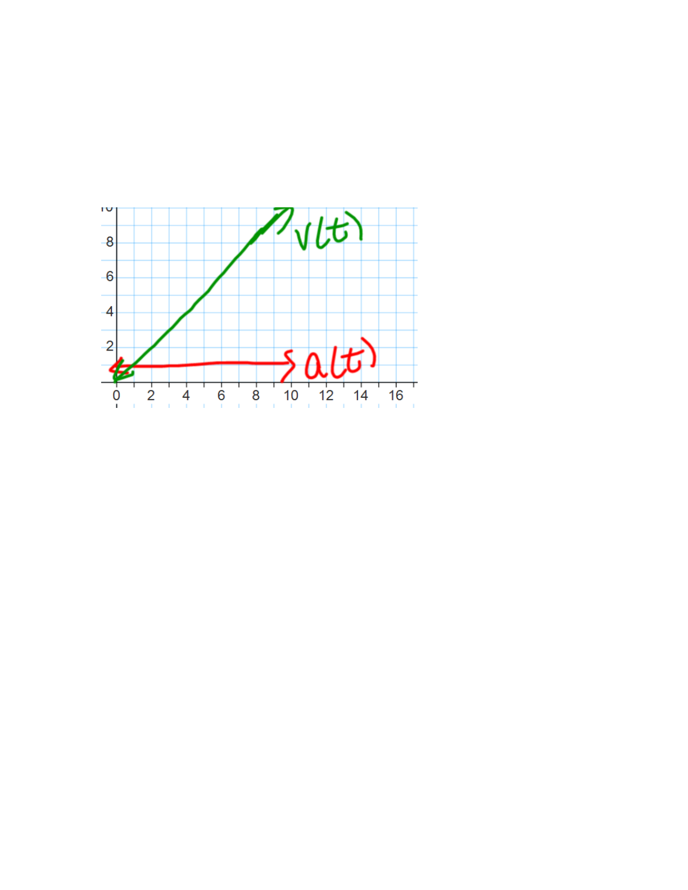

- (a)
- True or False: If the acceleration of an object is constant, then its velocity is
constant. This is false in general, and is true if and only if the acceleration is 0. Let \(a\) denote your non-zero constant acceleration. If \(a > 0\) then your velocity is increasing, and if \(a < 0\) then your velocity is decreasing. See the accompanying picture for when \(a>0\) (note that the units for \(v(t)\) and \(a(t)\) are not the same!)

- (b)
- True or False: A moving object can have negative acceleration and increasing speed.